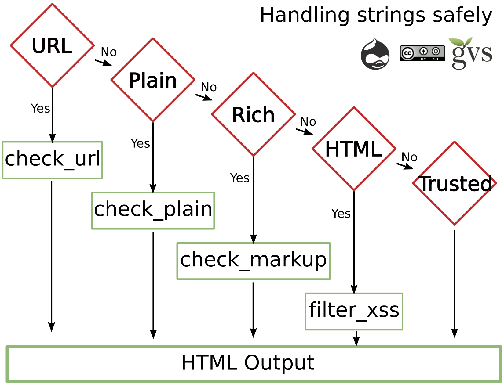

Current Drupal Security Team Lead.
Solutions architect lead at the University of Michigan.
Supports around 900 Drupal sites at the University.
Supports around 500 sites not related to the University.
Overview of Drupal security and the Drupal security team
Overview of SA05/Drupalgeddon
Overview of best practices
Please text: 734-821-5212
| Answer Choice | Text Code: |
|---|---|
| Yes | 4483 |
| No | 2983 |
| I don't have any. | 6276 |
Drupal has a dedicated Security Team of 42 people around the world.
The Security Team is a volunteer group.
We:
Do you use third-party libraries?
Please text: 734-821-5212
| Answer Choice | Text Code: |
|---|---|
| Yes | 9361 |
| No | 8617 |
| Unsure | 5821 |
A SQL injection attack consists of insertion or "injection" of a SQL query via the input data from the client to the application. A successful SQL injection exploit can read sensitive data from the database, modify database data (Insert/Update/Delete), execute administration operations on the database (such as shutdown the DBMS), recover the content of a given file present on the DBMS file system and in some cases issue commands to the operating system. SQL injection attacks are a type of injection attack, in which SQL commands are injected into data-plane input in order to effect the execution of predefined SQL commands.
SQL injection lets an attacker have the same access to your database that Drupal has.
Allows an attacker to add a user and modify users' roles.
Allows an attacker to change passwords and email addresses.
Allows an attacker to update URL's to payment pages.
Allows an attacker to change content.
Anything that can be done via the web interface, an attacker can do.
Most of the time SQL injection is easy to exploit.
Other vulnerabilities may require different actors to engage in actions timed correctly.
SQL injection can be exploited most of the time, by just an attacker.
When used correctly, the database API prevents SQL injection.
In the case of SA05/drupalgeddon, the database API is where the vulnerability was.
Oh, the irony.
- foreach ($data as $i => $value) {
+ foreach (array_values($data) as $i => $value) {
Changing password or email address on uid=1.
Adding files to the file system via the menu_router table and file_put_contents.
Adding a user and giving that user admin access.
Installing a PHP backdoor by enabling the PHP module and creating a node with PHP in it.
Patching the vulnerability
Many, many more ...
update users set name='admin' , pass = '$S$CTo
9G7Lx2rJENglhirA8oi7v9LtLYWFrGm.F.0Jurx3aJAmSJ53g' where uid = '1';
set @a=(SELECT MAX(uid) FROM users)+1;INSERT IN
TO users set uid=@a,status=1,name='n0n0x' , pass = '$S$CTo9G7Lx2jmHrpHDdKDR0R8X/
q4H9PXo02REYap3z2t8UE3F0DfC';INSERT INTO users_roles set uid=@a,rid=3;
update {users} set mail='[EMAIL_ADDRESS]' where uid=1;
INSERT INTO `menu_router` (`path`, `load_functions`, `to_arg_functions`, `description`, `access_callback`, `access_arguments`)
VALUES ('mziogj', '', '', 'mziogj', 'file_put_contents',’[TROJAN]’);
Please be respectful and don't exploit this server while I am doing the demo.
I will leave the server up this weekend, for educational purposes. Do not engage in illegal activities.
This was a major vulnerability, but let's keep in mind that the last major issue was over 7 years ago.
This code has been in Drupal since Drupal 7 Beta's.
Nothing is 100% sure, and nothing ever will be. We mitigate risk by using best practices.
For security, you can't check a list and be done.
You must keep working at it. It is a process, not a one-time task.
Which is why I hope everyone brushes their teeth.
Only use encrypted protocols.
https/ftps/ssh/etc
Every change you make might impact the security of your site. Therefore, security needs to be in your workflow.
Use supported versions (Soon time to update Drupal 6)
Take and verify backups.
Always make sure you update after a security release comes out.
Blog vs. complex site. Your blog is likely to be compromised to send spam or to act in part of a bot net.
Your complex site might be compromised for the data it has.
Security is a balance.
Is your site a target?
You might have legal requirements imposed by the data you keep.
Use a dedicated Drupal hosting provider.
Shared hosting normally runs the webserver as the owner of the file system (cpanel).
Multiple sites on a server often use a common account for all sites. (www-data, nobody, etc)
Unless you have a deep understanding of apache/nginx and file permissions, multisite is insecure.
Paranoia: Locks your site down.
Security Review: Runs a checklist of items and confirms your site adheres to them.
Permissions Lock: Finer-grained permissions over what users with 'administer permissions' can do.
Two-Factor Authentication: Something you know, and something you have.
Hacked! Tells if code has been changed.
Password Policy: Enforces strong passwords.
While XSS/CSRF/access bypass may be harder to mass attack, but an attacker can still compromise a site with them. The security team releases SA's on Wednesdays, set time aside to update your sites (or pay someoene to do it for you).
Details on these vulnerabilities are outside the scope of this talk.
Thank you for your time!